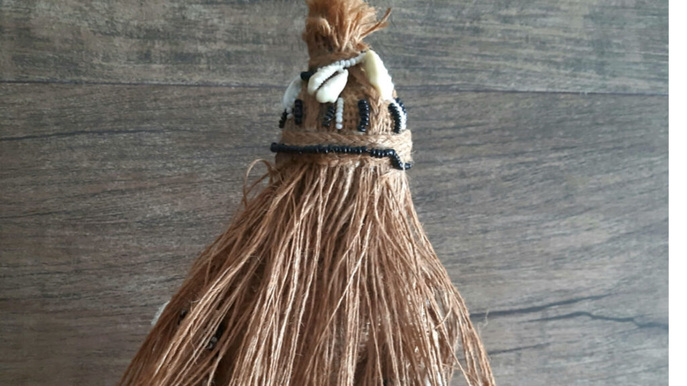
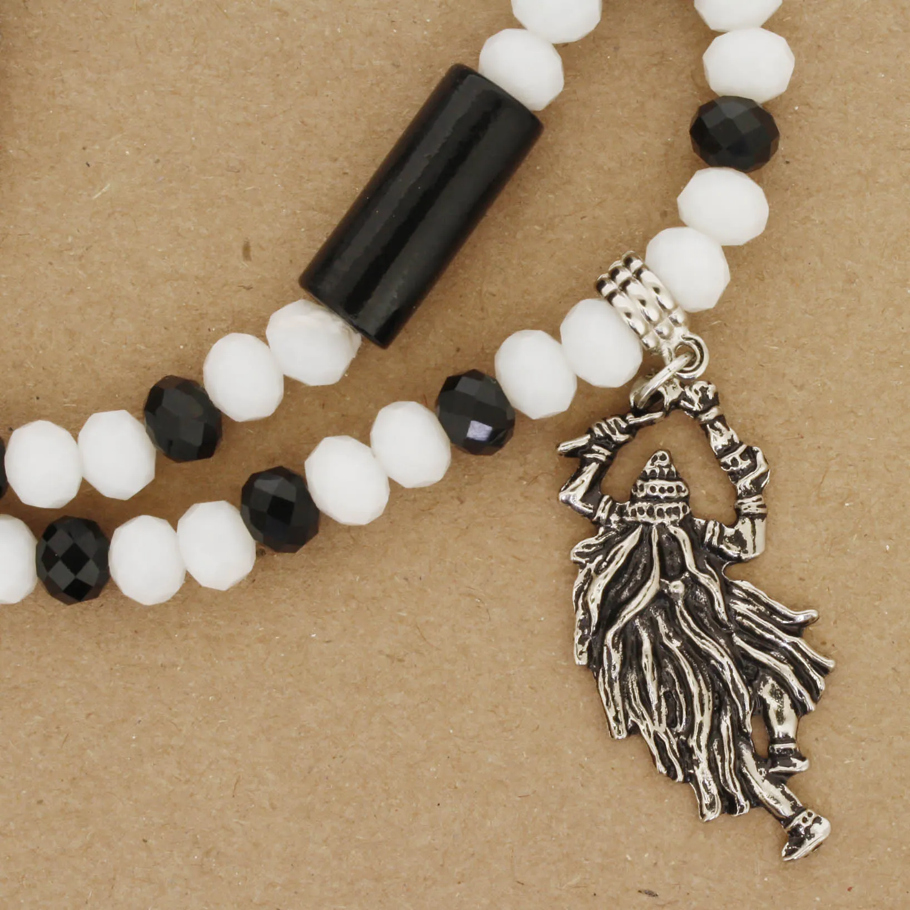
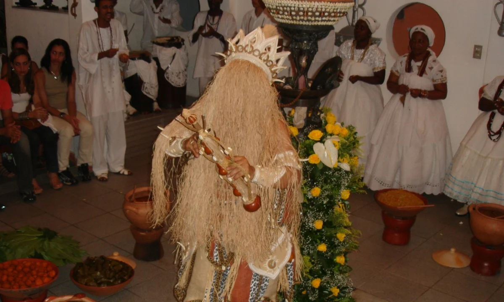
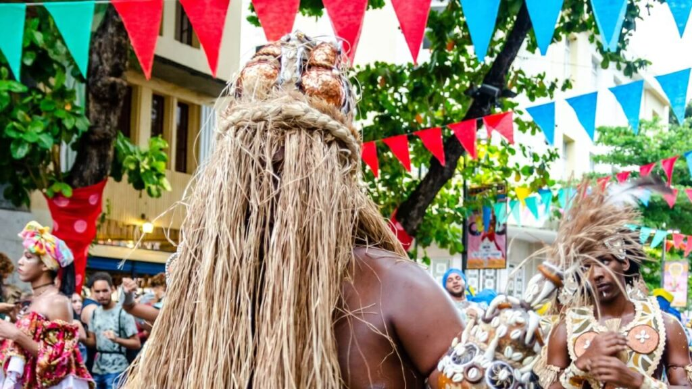

ORIXÁ DA CURA
Cura, Respeito, Silêncio e Transformação.
" Ouvir a si mesmo é um ato de cura. "
Quem é Omolu?

Omolu, chamado carinhosamente nos terreiros de umbanda e candomblé como “o velho”, tem seu nome original de Obaluaê
(Candomblé) ou Xapanã (Nação ou batuques do Sul). Seu nome iorubá Obalúayé significa “rei, senhor da terra”, enquanto Omolu
(do iorubá Omo Olu) significa “filho do Senhor”. Ambos são títulos respeitosos e coerentes, usados para evitar pronunciar seu
nome original: Soponna ou Xapanã. Isso ocorre porque Soponna (deus da varíola) é extremamente temido; acredita-se, até que
pronunciar seu nome atraia sua ira. Por isso, os iorubás referem-se a ele com epítetos elogiosos, como Obalúayé ou Omolu, em
vez de seu nome verdadeiro.
O orixá veio junto de seus seguidores africanos de diversos lugares da África, com culturas originalmente bantu e nagô.
Mas o “velho”, além de vir da África, veio de dentro do coração de seus filhos, que possuem fé absurda no senhor das palhas.
O sincretismo foi uma prática adotada pelos escravizados para conseguirem cultuar suas entidades e orixás sem parecer um
afronte à Igreja Católica.
Omolu é conhecido como São Lázaro, que é um santo ligado aos doentes e leprosos, devido às chagas que ambos carregam em seus
corpos e, em alguns casos, também como São Roque, outro santo protetor contra pestes. Desse modo, os escravizados podiam
venerar Omolu sob a imagem de São Lázaro ou São Roque sem levantar suspeitas, mantendo vivo o culto de forma velada.
Itãs: Histórias Mitolôgicas de Omolu;

As lendas sobre Omolu são abundantes e transmitidas de forma oral de geração em geração. Uma das principais é a história
de que Omolu é filho de Nanã, Yabá feminina conhecida pela sua infinita sabedoria, a senhora do barro e da lama.
Nanã Buruquê é a Senhora da Criação. Essa Orixá, temida por ser, muitas vezes, intransigente e austera, é respeitada como
a mais velha das Yabás. De temperamento brando, acolhe e orienta seus filhos como uma grande matriarca de muita sabedoria.
Ela representa a velhice, a experiência da vida e os aprendizados mais profundos. Seus domínios são os lagos, os pântanos, a
lama e os encontros do rio com o mar.
No sincretismo religioso, Nanã representa Nossa Senhora Sant’Ana (ou Santa Ana). Sabe-se que ela foi a mãe de Maria de
Nazaré, portanto, a avó de Jesus. Seu nome significa graça. Conta a lenda que ela já era idosa e considerada estéril quando
seu marido, São Joaquim, fez penitência no deserto orando por uma graça divina. Um anjo apareceu e disse que suas orações
teriam sido atendidas. Ao regressar ao lar, pouco tempo depois, Sant’Ana concebeu Maria, a mãe de Jesus.
Retornando à história: ao nascer, porém, Omolu veio ao mundo com o corpo todo coberto de feridas purulentas, como se
já estivesse acometido por uma terrível doença (a varíola). Nanã, horrorizada e temendo o estigma, abandonou o filho à beira-mar.
Quem resgatou o pequeno Omolu foi Iemanjá, uma gentil Yabá conhecida como a mãe dos mares e oceanos, que banha seus filhos
nas suas águas, descarregando e trazendo a leveza. Conhecida como mãe de todos os Orís, neste caso ela foi mais que mãe de
Omolu; ela foi a salvadora. Iemanjá, com seu amor eterno, banhou Omolu em suas águas e o curou de suas chagas. Sobrevivendo aos
cuidados de Iemanjá, Omolu tornou-se um homem forte e com saúde. Assim, ele se tornou esse poderoso orixá que cura seus filhos
enfermos.
Outra lenda famosa é a de Omolu e Iansã, a rainha dos ventos e bambuzais, sendo representada pela movimentação e coragem de
enfrentar a vida. Tal história discorre do fato de haver uma festa entre os orixás e Omolu ser o único isolado e desprezado, por
conta de ser conhecido por suas chagas. Oyá, com seu amor e astúcia, aproximou-se de Omolu. Com seu vento, ela levantou as
palhas, transformando as feridas de Omolu em pipocas e revelando um orixá jovem e belo.
A Companhia dos Cães;
Omolu, assim como São Lázaro, é associado ao cuidado dos cães. Diz a lenda que, quando ele foi abandonado na beira do mar,
foram os cães que o ajudaram a sobrevier, lambendo suas feridas e trazendo alimento, até que Iemanjá o encontrasse. Por isso, o
cão é considerado um animal sagrado para ele, sendo símbolo de fraternidade e lealdade.
Cores de Omolu e Elementos;

A cor desse orixá é variável. No Sul, nos cultos de Nação, a cor principal é o lilás, representando a presença espiritual.
Na umbanda, a cor desse orixá é preto, branco e marrom, sendo associado à morte e à transformação. Algumas qualidades, como
Azoani, vestem vermelho ou cores terrosas.
Xaxará: Sua "Arma" de Cura;
O xaxará é o emblema sagrado de Omolu e Obaluaê, funcionando como um cetro de força que simboliza o domínio deste orixá
sobre a terra e as doenças. Ele é confeccionado artesanalmente com as nervuras das folhas de palmeira, geralmente do dendezeiro,
que são cuidadosamente agrupadas e amarradas para formar um feixe. Toda a sua extensão é envolvida pela palha da costa, o
material que guarda os mistérios de Omolu, e o acabamento é feito com búzios, contas coloridas e sementes que representam a
riqueza e a ancestralidade.
No xaxará, também há o simbolismo da pipoca, elemento associado a Omolu: a pipoca representa a própria doença, como a ferida
purulenta ou a varíola, sendo transformada em saúde, paz e beleza. Por isso, nas cerimônias conhecidas como Olubajé ou em passes
de limpeza, a pipoca é usada para esfregar o corpo dos fiéis. Acredita-se que, assim como o milho estoura e vira uma flor branca,
a pipoca absorve as energias negativas, as doenças e as impurezas do corpo da pessoa, deixando-a limpa.
Ejé verde: Alma dos Orixás;

Existem algumas ervas associadas ao orixá Omolu:
Agoniada: Faz parte da iniciação. Esta erva purifica os filhos de santo, deixando-os livres de fluidos
negativos. É utilizada no bori, nas lavagens de contas e em todas as obrigações do deus das endemias e epidemias. Na medicina
popular, a mesma é usada para corrigir o fluxo menstrual e combater a asma.
Alamanda: Não é utilizada em obrigações, sendo empregada somente em banhos de descarrego. Na medicina
caseira, ela é usada para tratar doenças da pele: sarna (coceiras), eczemas e furúnculos. Para usar, é necessário cozinhar as
folhas e aplicar o chá morno sobre a área afetada.
Alfavaca-roxa: Empregada em todas as obrigações de cabeça e nos abôs dos filhos deste orixá. É muito usada em banhos de
limpeza ou descarrego. A medicina caseira usa seu chá em cozimento para auxiliar no emagrecimento.
Alfazema: Empregada em todas as obrigações de cabeça. É aplicada nas defumações de limpeza e usada também na magia amorosa
em forma de perfume. A medicina popular dita grandes elogios a esta erva, pois ela é um excelente excitante e antiespasmódico,
sendo usada também como reguladora da menstruação. É aplicada somente como chá.
Babosa: Muito usada em rituais de Umbanda, especificamente em defumações pessoais. Para fazer a defumação, é necessário
queimar suas folhas depois de secas, o que leva um certo tempo devido à gosma abundante. A defumação é feita após o banho de
descarrego. Para a medicina caseira, sua seiva é de grande eficácia em abscessos ou tumores, além de muitas outras aplicações.
Araticum de areia (Malolô): Liturgicamente, os bantos a usam nos banhos de descarrego, misturada a outras ervas. A medicina caseira
indica a polpa dos frutos para tratar tumores e o cozimento das folhas no tratamento do reumatismo.
Arrebenta-cavalo: No uso ritualístico, esta erva é empregada em banhos fortes, do pescoço para baixo, em "hora aberta". É também
usada em magias para atrair simpatia. Não é comum seu uso na medicina caseira.
Assa-peixe: Usada em banhos de limpeza e nos boris. Na medicina popular, ela é aplicada nas afecções do
aparelho respiratório em forma de xarope.
Musgo: Aplicada em todas as obrigações de cabeça referentes a qualquer orixá. A medicina caseira aconselha a aplicação do
suco no combate às hemorroidas por meio de uso tópico.